Nanopore sequencing for Mycobacterium tuberculosis drug susceptibility testing and outbreak investigation
Michael B. Hall $\in$ Iqbal Group @ EMBL-EBI
Illumina increasingly being used for TB clustering and DST (England, the Netherlands, New York State)
Requires large capital outlay and significant testing volume to be cost-effective and ensure clinically appropriate turnaround times
ONT's MinION device offers solution to these two issues
Error rate has been an obstacle in the past
Some early signs that error rate has sufficiently improved for DST and clustering
- 431 isolates sequenced on both platforms
- DST results highly concordant
- Clustering lacked detail
- In-house scripts and catalogues
Aim
Compare Nanopore to Illumina in its ability to: predict drug resistance and identify putative transmission clusters using SNPs
Acknowledgements
- Marie Sylvianne Rabodoarivelo
- Niaina Rakotosamimanana
- Simon Grandjean Lapierre
EMBL-EBI
Zamin Iqbal
- Anastasia Koch
- Anzaan Dippenaar
- Helen Cox
- Robin Warren
- Melanie Grobbelaar
Oxford
- Tim Walker
- Tim Peto
- Sophie George
Data
- 208 isolates from Madagascar ($n$=109), South Africa (67), England (32)
- Sequenced from same DNA extraction on Illumina and Nanopore
- 35 Malagasy isolates sequenced on PacBio CCS
Quality control
- Nanopore basecalled with Guppy v5.0.16
- Remove non-Mtb reads (all data)
- Decontaminated read depth $\ge20$ (Illumina; $n$=1) $\ge30$ (Nanopore; $n$=37) with 6 failing both
- Remove mixed and indeterminate lineage isolates ($n$=12)
- One isolate found to have non-matched sequencing data
- 151 total isolates after QC
Variant calling
SNP-based requires high-quality SNP calls
Illumina: COMPASS (stampy, samtools, and BCFtools)
Nanopore: Minimap2 and BCFtools (v1.13) with custom filtering- Quality score $\lt85$
- $\lt1$% reads on both strands
- Read depth $\lt20$% isolate median
- Variant distance bias (VDB) $\lt0.00001$
- $\lt90$% reads supporting called allele
SNP evaluation
Seven isolates with PacBio CCS data over 20x read depth
Assemble with Flye and polish for indels with Illumina
Recall = $\frac{TP}{TP+FN}$ | Precision = $\frac{TP}{TP+FP}$
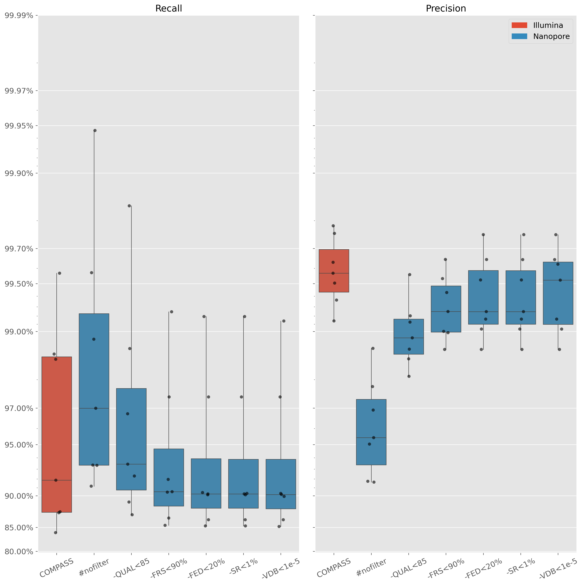SNP distance
psdm to generate distance matrix

SNP distance
Isolates within (Illumina) distance of 20 SNPs
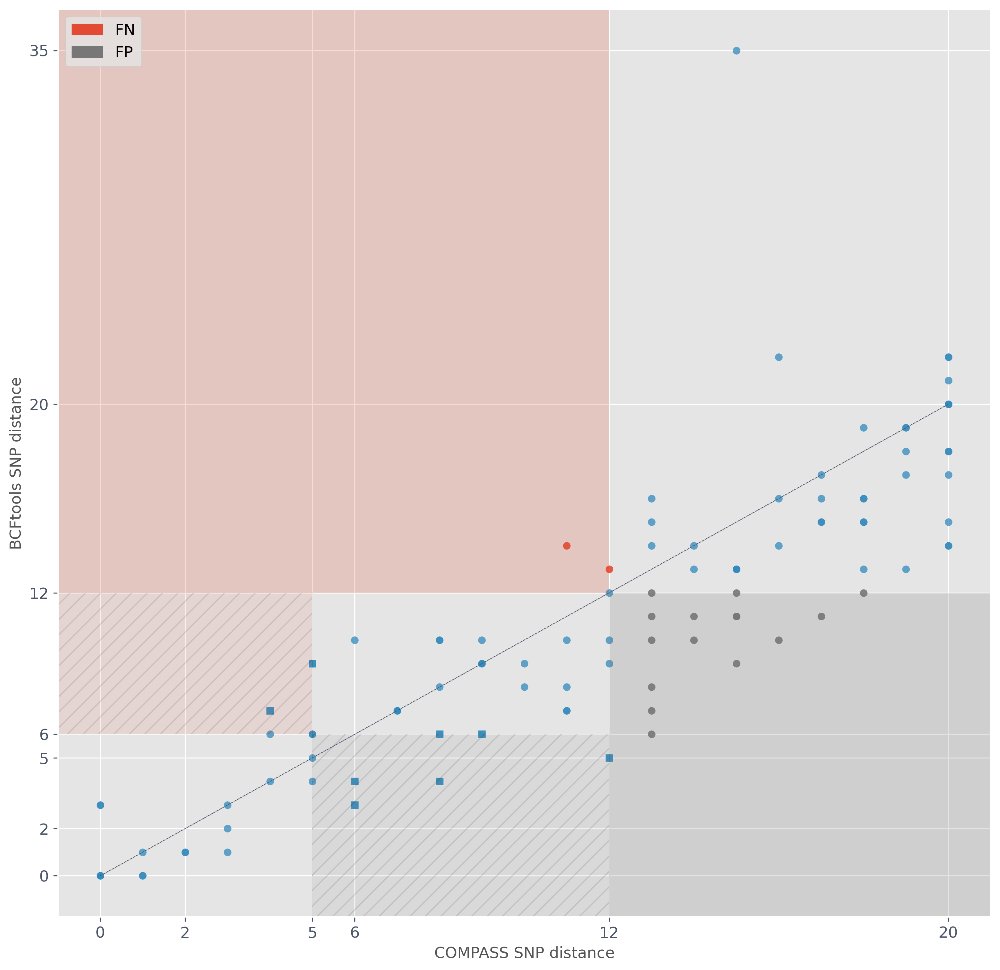Evaluating SNP-based transmission clusters
Illumina thresholds of interest 5 and 12
Take Illumina clustering as truth and see how similar Nanopore clustering is
What Nanopore thresholds to use?
How to define similarity?
Cluster similarity - recall
SACR - sample-averaged cluster recall
$$\frac{\left|C_{n,I}\cap C_{n,N}\right|}{|C_{n,I}|}$$
$C_{n,I}$ - the Illumina ($I$) cluster of isolate $n$
$C_{n,N}$ - the Nanopore ($N$) cluster of isolate $n$
$\cap$ - intersection
$|x|$ - size/length of $x$
Cluster similarity - precision
SACP - sample-averaged cluster precision
$$\frac{\left|C_{n,I}\cap C_{n,N}\right|}{|C_{n,N}|}$$
Same as SACR, but denominator is size of Nanopore cluster
Cluster similarity - excess clustering rate
SACR and SACP don't identify Nanopore clusters solely composed of Illumina singletons
$$XCR = \frac{|S_I-S_N|}{|S_I|}$$
$S_I$ - Illumina singletons
Example: Illumina (left) and Nanopore (right)
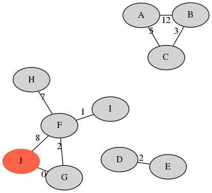 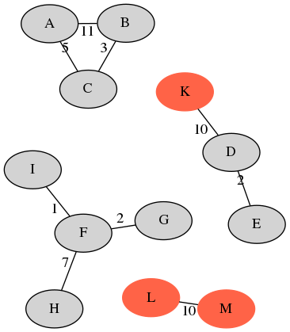| sample | A | B | C | D | E | F | G | H | I | J | avg. |
|---|---|---|---|---|---|---|---|---|---|---|---|
| recall | 1.0 | 1.0 | 1.0 | 1.0 | 1.0 | 0.8 | 0.8 | 0.8 | 0.8 | 0.0 | 0.82 |
| precision | 1.0 | 1.0 | 1.0 | 0.66 | 0.66 | 1.0 | 1.0 | 1.0 | 1.0 | 0.0 | 0.83 |
20 Illumina singletons - XCR of $2/20=0.1$.
Selecting Nanopore SNP thresholds
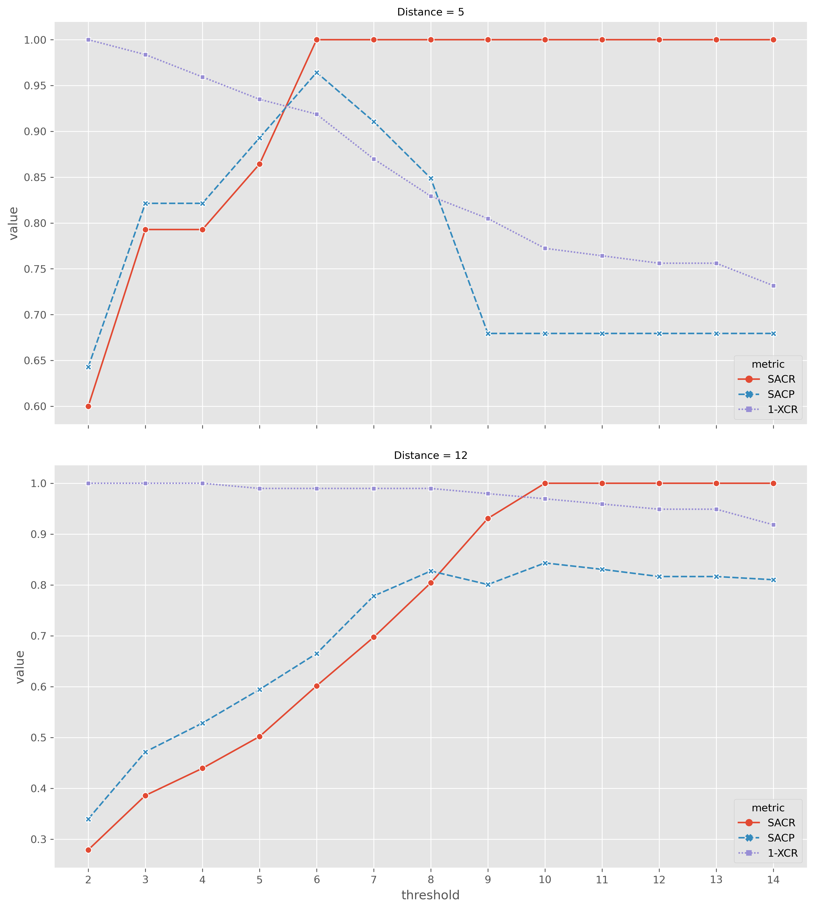5-SNP clusters
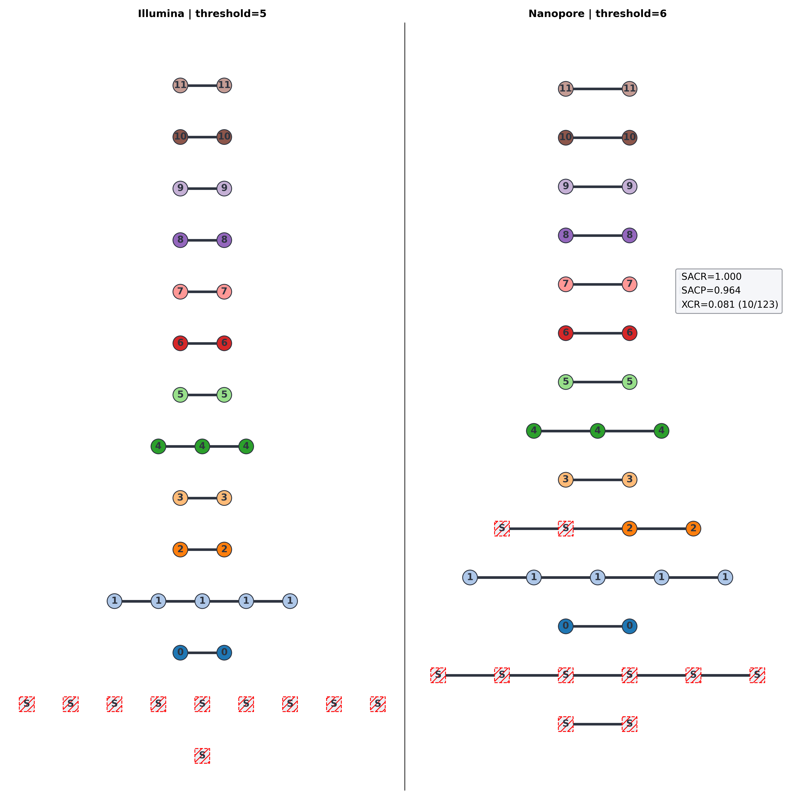12-SNP clusters
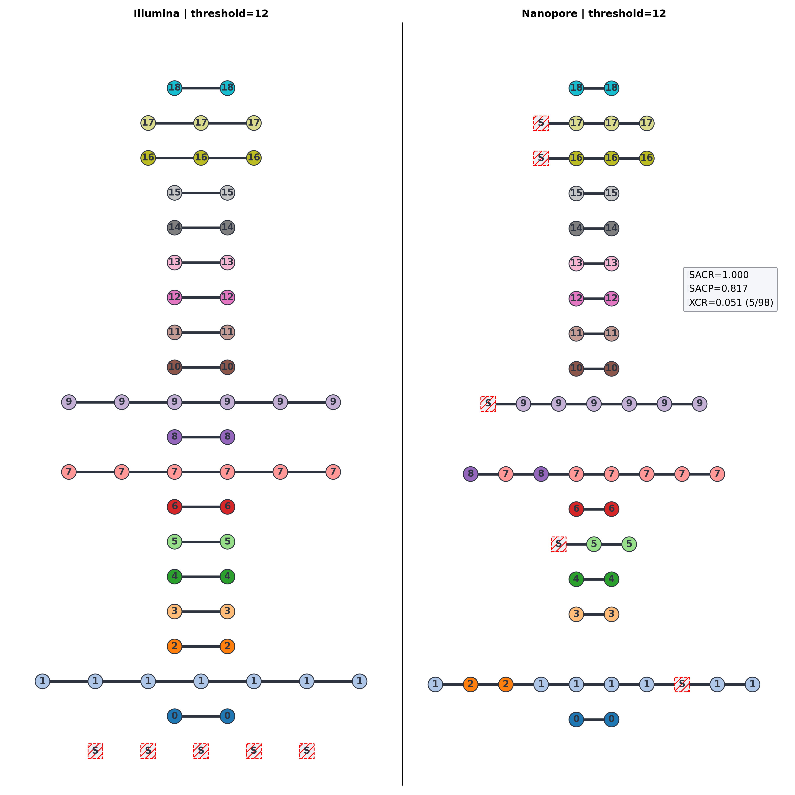Mixed technology
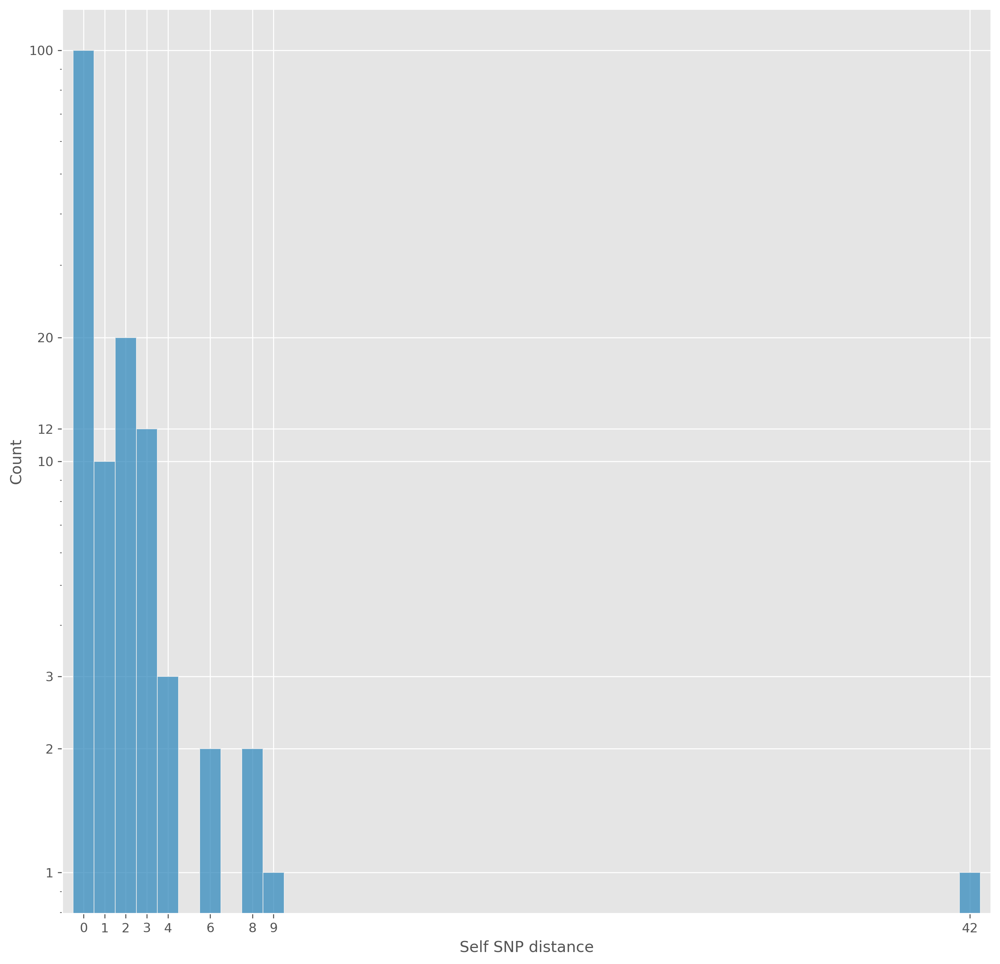Mixed technology
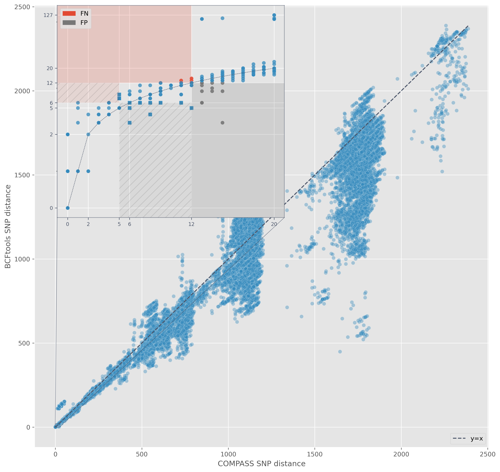Mixed technology
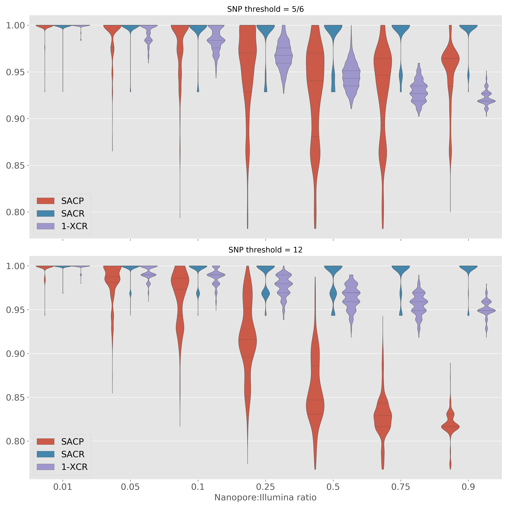Drug resistance
How do Nanopore WGS-based predictions compare to Illumiuna? (Mykrobe)
If different, what do phenotypes say?
Primary focus is genotype concordance - thoroughly validated
Mykrobe catalogue
- 476 amino acids changes (3,352 nucleotide mutations)
- 60 promoter SNPs
- 1,904 nucleotide-level SNPs and indels
- All katG and pncA 1/2bp frameshifts (61,258)
- Total of 66,574 nucleotide-level resistance mutations
Mykrobe genotype concordance
One isolate with a 1bp deletion in katG
One isolate with three 1bp deletions in katG
Mykrobe prediction concordance
| Drug | FN(R) | FP(S) | FNR(95% CI) | FPR(95% CI) | PPV(95% CI) | NPV(95% CI) |
|---|---|---|---|---|---|---|
| Isoniazid | 0(81) | 1(70) | 0.0% (0.0-4.5%) | 1.4% (0.3-7.7%) | 98.8% (93.4-99.8%) | 100.0% (94.7-100.0%) |
| Rifampicin | 0(79) | 0(72) | 0.0% (0.0-4.6%) | 0.0% (0.0-5.1%) | 100.0% (95.4-100.0%) | 100.0% (94.9-100.0%) |
| Ethambutol | 0(54) | 0(97) | 0.0% (0.0-6.6%) | 0.0% (0.0-3.8%) | 100.0% (93.4-100.0%) | 100.0% (96.2-100.0%) |
| Pyrazinamide | 0(30) | 0(121) | 0.0% (0.0-11.4%) | 0.0% (-0.0-3.1%) | 100.0% (88.6-100.0%) | 100.0% (96.9-100.0%) |
| Streptomycin | 0(47) | 1(104) | 0.0% (0.0-7.6%) | 1.0% (0.2-5.2%) | 97.9% (89.1-99.6%) | 100.0% (96.4-100.0%) |
| Amikacin | 0(13) | 1(138) | 0.0% (0.0-22.8%) | 0.7% (0.1-4.0%) | 92.9% (68.5-98.7%) | 100.0% (97.3-100.0%) |
| Capreomycin | 0(13) | 1(138) | 0.0% (0.0-22.8%) | 0.7% (0.1-4.0%) | 92.9% (68.5-98.7%) | 100.0% (97.3-100.0%) |
| Kanamycin | 0(14) | 1(137) | 0.0% (0.0-21.5%) | 0.7% (0.1-4.0%) | 93.3% (70.2-98.8%) | 100.0% (97.3-100.0%) |
| Ciprofloxacin | 0(16) | 0(135) | 0.0% (0.0-19.4%) | 0.0% (0.0-2.8%) | 100.0% (80.6-100.0%) | 100.0% (97.2-100.0%) |
| Moxifloxacin | 0(16) | 0(135) | 0.0% (0.0-19.4%) | 0.0% (0.0-2.8%) | 100.0% (80.6-100.0%) | 100.0% (97.2-100.0%) |
| Ofloxacin | 0(17) | 0(134) | 0.0% (0.0-18.4%) | 0.0% (0.0-2.8%) | 100.0% (81.6-100.0%) | 100.0% (97.2-100.0%) |
Drug susceptibility testing
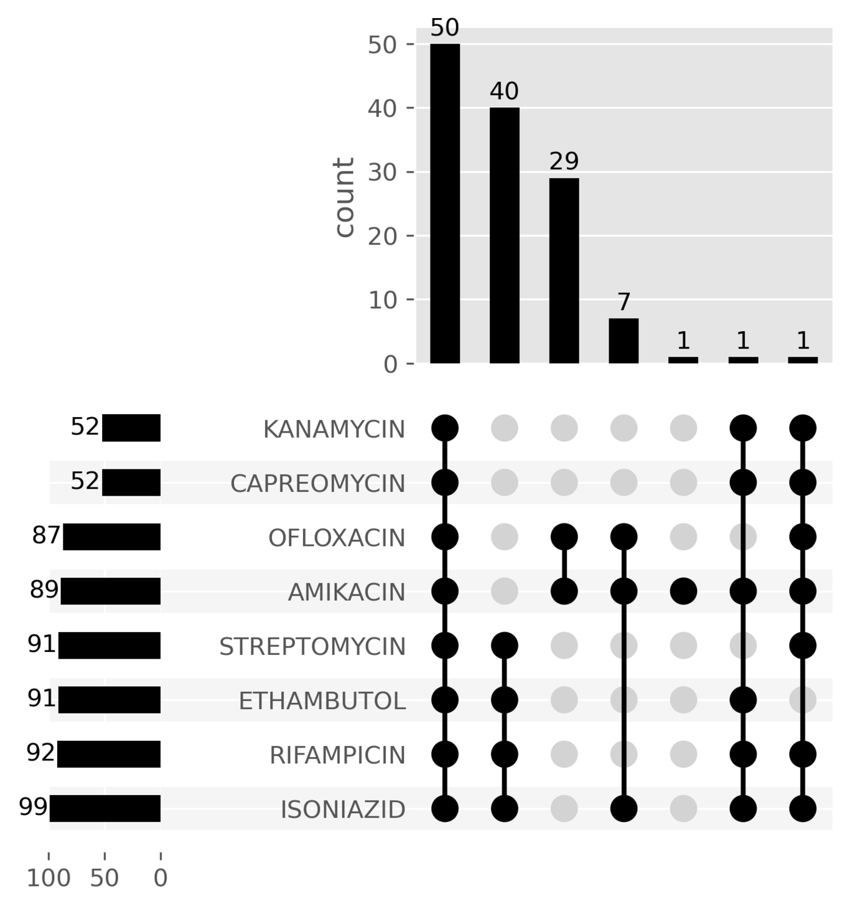Phenotype concordance
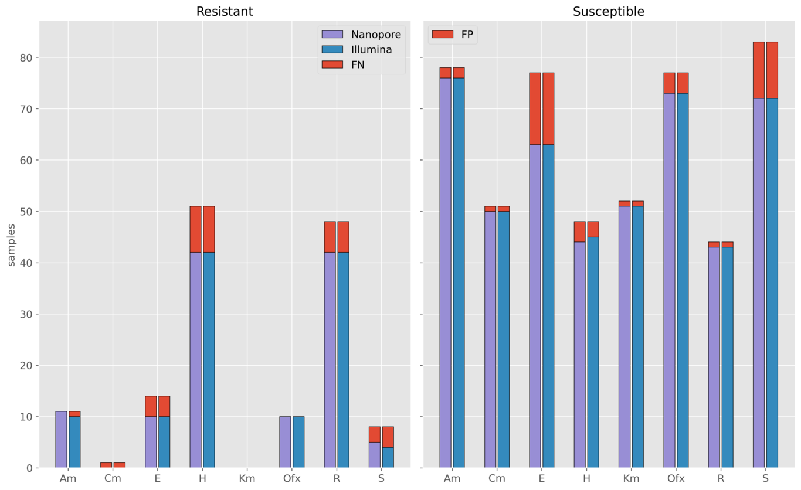Impact of Nanopore read depth
Summary
Nanopore SNP precision/recall similar to Illumina
Nanopore clusters do not miss isolates
Mixing technologies is possible
Nanopore resistance predictions consistent with Illumina
Read depth of 30x does not impact resistance predictions